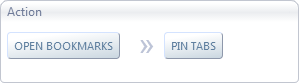
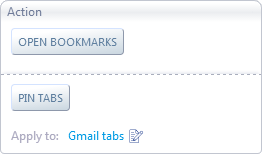
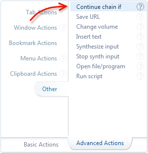
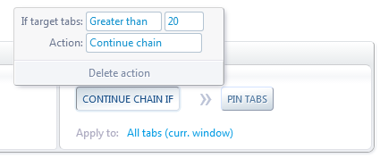
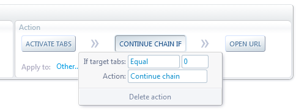
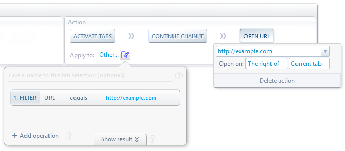
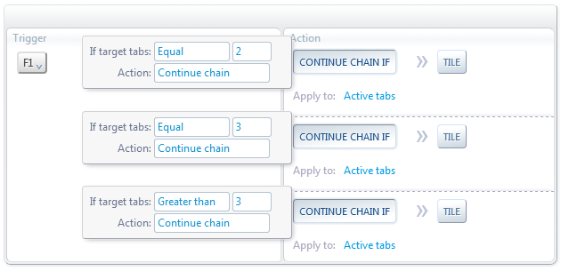

AutoControl provides a wide variety of actions for you to choose from.
There are actions for tabs, for windows, for bookmarks, for the clipboard, for menu creation and deployment, and more.
One important aspect of AutoControl's action system, is the ability to construct complex actions by putting simpler actions together in sequence.
Let's see an example of that.
Suppose we want to create a shortcut for opening all bookmarks of a given folder in new tabs and then pinning those tabs.
First we use the Open Bookmarks action for opening the bookmark folder in new tabs,
and then the Pin tabs action will pin those tabs.
But we need a way to connect these two actions so that Pin tabs pins the same tabs that were created by Open Bookmarks.
For that, we use what's called an action chain.
Action Chains
In an action chain, the tabs used or created by an action are passed on to the next action in the chain and so on. This is how they look like:

In this example, the tabs created by Open Bookmarks are passed on to Pin tabs which will pin them.
Now let's change the example a bit. Suppose we want to open a bookmarks folder in new tabs and then pin only the Gmail tab, not all of them.
In this case, the Pin tabs action must act upon a different set of tabs than those Open Bookmarks created.
So we can't use an action chain. What we need in this case is what's called an unchained sequence.
Unchained Sequences
An unchained sequence is a sequence of actions similar to an action chain, except each action in the sequence is applied to its own set of tabs.
This is how they look like:

The tabs created by Open Bookmarks are NOT passed on to the following action.
Instead, Pin tabs is applied to the tabs specified in the Apply to field.
You can combine these two mechanisms, action chains and unchained sequences, to construct actions of any complexity.
Conditional Execution

It's also possible to execute actions conditionaly. i.e. if a condition is true, a sequence of one or more actions will be executed,
otherwise nothing will be done.
This is achieved with the Continue chain if action, which will allow an action chain to continue or not depending on the
amount of tabs it received.
For example, the action chain below will pin all tabs in the current window, but only if the window contains more than 20 tabs.
Step 0/0: undefined

There are 3 relevant parts in the above example: 1. The target tabs passed to the action chain are all the tabs in the current window. 2. The Continue chain if action receives those tabs and checks if its condition is true. 3. If the condition is true, all remaining actions in the chain are executed.
Additionally, the Continue chain if action can be anywhere in the middle of an action chain, as shown bellow:
Step 0/0: undefined

In this case, Activate tabs will switch to the tab specified in the Apply to field and then it will pass that
tab to Continue chain if. If zero tabs were passed, the chain will continue and Open URL will be executed.
This allows, for example, to open a URL only if that URL is not already open. If it is, switch to the tab instead.
This is shown below for the URL http://example.com. Step 0/0: undefined

In plain english, the above example means: Activate the tab with the URL example.com. If there's no tab with that URL, open the URL in a new tab.
Now let's see one final example that will show the full power of the Continue chain if action.
Suppose we wanted to tile all browser windows in different ways depending on how many windows there are. As follows:
1 window
---->
Do nothing
2 windows
---->
Tile in a 2×1 grid
3 windows
---->
Tile in a 3×1 grid
4 or more windows
---->
Tile in a 2×2 grid
i.e. we need to execute a different Tile action on each case.
This is achieved by putting each Tile action in a separate chain, each with a corresponding
Continue chain if action, as shown bellow: Step 0/0: undefined

Each action chain is applied to the "Active tabs". This ensures that the number of tabs passed to each chain matches the number of windows
currently open (every window always has one active tab).
Then, as the condition of each Continue chain if action is different, only one of them will allow their respective chain to continue.
In other words, when you press F1, only one of the three Tile actions will be executed.
One limitation of the Continue chain if action is that it only supports one type of condition, i.e. number of target tabs.
If more advanced conditions are needed, it's possible to use the Run Script action in combination with the
ACtl.STOP_CHAIN and ACtl.STOP_FULL_SEQ constants.
 Forum
Install now from theChrome Web Store
Forum
Install now from theChrome Web Store